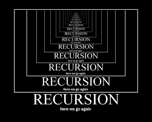

Magic of Recursion
October 10, 2025
Recursion can seem confusing at first, but once you understand how it works, it quickly becomes one of the most powerful tools in programming. At its core, recursion is when a function calls itself in order to solve a smaller part of a larger problem. It is actually a logical way to think about certain tasks and simplifies the code. In programming, recursion is often used for problems that have a natural repetitive structure, such as calculating factorials, or when dealing with linked lists and binary trees. One of the most important parts of writing a recursive function is defining the base case, which tells the function when to stop calling itself. Without a base case, the function would continue forever and eventually crash the program. Recursion is very unique in how it can simplify complex problems into much shorter and cleaner solutions. Instead of writing long loops and tracking lots of variables, recursion allows the function to essentially solve itself by repeating the same logic on a smaller scale. Learning recursion has been one of the most challenging yet interesting parts of computer science for me. Once I understood it, I started noticing patterns in problems that I would not have recognized before. It made me realize that sometimes, thinking differently is the key to solving something difficult.